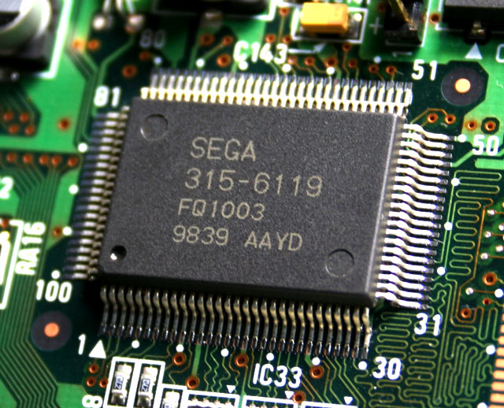

El hardware detrás del Retro Gaming

El coleccionismo retro no solo se trata de rescatar viejos polígonos; es también una apreciación profunda del audio analógico y de cómo los compositores hacían magia con recursos técnicos limitados.
Disfrutar de las bandas sonoras originales de los primeros títulos de la saga God of War, por ejemplo, es una experiencia que cambia drásticamente dependiendo del hardware. Muchos puristas dedican horas a buscar la configuración perfecta para revivir estas atmósferas acústicas, priorizando una imagen rica en detalles —el "modo calidad" absoluto— mediante el uso de cables por componentes originales conectados a pesados televisores CRT (como los clásicos Panasonic).
Esa fidelidad visual viene acompañada de un sonido sin compresión moderna. Los chips de audio integrados en las consolas de sexta generación entregaban un rango dinámico que hoy, al conectarlos a los amplificadores análogos que vendemos en Sonido Vivo, demuestran por qué la tecnología clásica sigue siendo el estándar de oro para los audiófilos y coleccionistas exigentes.